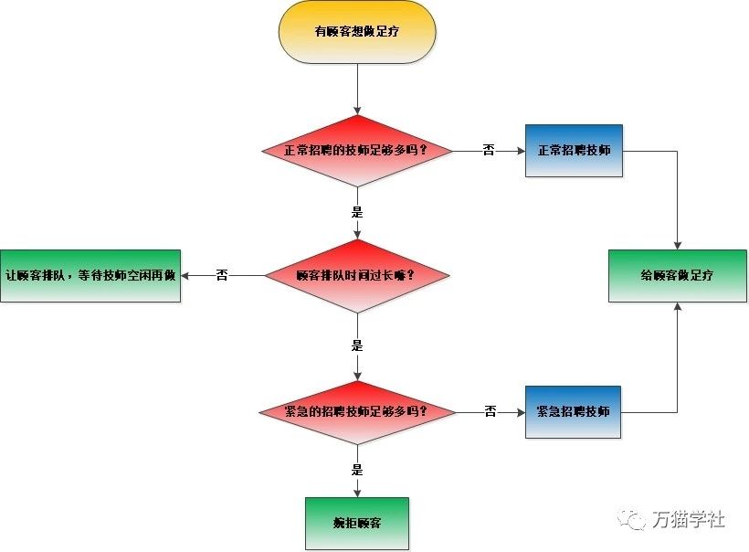
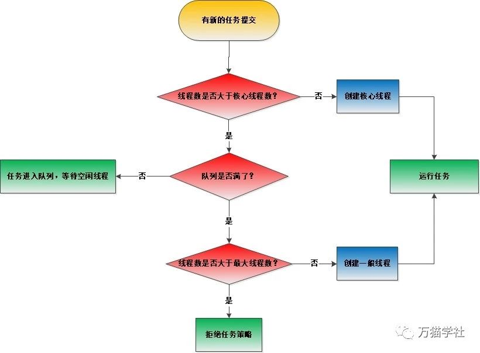

餐盘在灯光的照耀下格外晶莹洁白，女朋友拿起红酒杯轻轻地抿了一小口，对我说：“经常听你说线程池，到底线程池到底是个什么原理？”我楞了一下，心里想女朋友今天是怎么了，怎么突然问出这么专业的问题，但做为一个专业人士在女朋友面前也不能露怯啊，想了一下便说：“我先给你讲讲我前同事老王的故事吧！”欢迎关注微信公众号：万猫学社，每周一分享Java技术干货。
老王是一个已经北漂十多年的程序员，岁数大了，加班加不动了，升迁也无望，于是拿着手里的一些积蓄，回老家转行创业。他选择了洗浴行业，开一家洗浴中心，是的，一家正规的洗浴中心。之前在北京的时候，喜欢去的澡堂叫“清华池”，他想了想，就给自己的洗浴中心取名为“线程池”。欢迎关注微信公众号：万猫学社，每周一分享Java技术干货。
线程池开业以后，老王发现有顾客想做足疗，于是就招聘了1个足疗技师，多增加了一项业务增加了收入。随着做足疗的顾客增多，为了赚更多钱又招聘了4个足疗技师。
过了一段时间，洗浴中心的生意越来越好，做足疗的顾客也越来越多。但是，老王发现自己店里的足疗技师已经有5个足疗技师，再招聘就太多了，支付不起再多工资了。足疗技师忙不过来怎么办？老王是个聪明人，马上想到办法：让顾客排队，有哪个足疗技师做完了，空闲出来了，就在队伍里再叫一个顾客继续做。欢迎关注微信公众号：万猫学社，每周一分享Java技术干货。
一到周末，来洗浴中心的顾客比平时多了几倍，想足疗的顾客排队时间太长，顾客们已经不耐烦了。老王马上做出反应，又紧急从其他洗浴中心招聘了5个足疗技师，为队伍里顾客做足疗，大大减少排队的顾客。
不过，有时生意太火爆了，紧急招聘的技师也用上了，顾客排队时间也是很长，再来新的顾客，老王只能满脸赔笑地和顾客说：“您下次再来吧，下次给您找个好技师。”，把顾客拒之门外。
过了周末以后，店里不能养闲人啊，老王就把紧急招聘的技师都辞退了。欢迎关注微信公众号：万猫学社，每周一分享Java技术干货。
老王的生意越做越红火，很快就要开分店、融资上市、走上人生巅峰。既然这么成功，就让我们来复盘一下他的经营之道吧。

如果你了解了老王的经营之道，线程池就不难理解了，把顾客替换成任务，把足疗技师替换成线程，线程池洗浴中心就是线程池了，线程池的内部原理就是这样的：

欢迎关注微信公众号：万猫学社，每周一分享Java技术干货。
铃铃铃，闹铃把我吵醒，原来是一场梦啊，我哪有什么女朋友？今天上午有一个面试，赶紧起床洗漱完毕，就出发了。在路上回想那个奇怪的梦，要不再复习一下线程池的内部原理吧！
先看一下ThreadPoolExecutor类的execute方法：
public void execute(Runnable command) {
if (command == null)
throw new NullPointerException();
//获取clt，clt记录着线程池状态和运行线程数。
int c = ctl.get();
//运行线程数小于核心线程数时，创建线程放入线程池中，并且运行当前任务。
if (workerCountOf(c) < corePoolSize) {
if (addWorker(command, true))
return;
//创建线程失败，重新获取clt。
c = ctl.get();
}
//线程池是运行状态并且运行线程大于核心线程数时，把任务放入队列中。
if (isRunning(c) && workQueue.offer(command)) {
int recheck = ctl.get();
//重新检查线程池不是运行状态时，
//把任务移除队列，并通过拒绝策略对该任务进行处理。
if (! isRunning(recheck) && remove(command))
reject(command);
//当前运行线程数为0时，创建线程加入线程池中。
else if (workerCountOf(recheck) == 0)
addWorker(null, false);
}
//运行线程大于核心线程数时并且队列已满时，
//创建线程放入线程池中，并且运行当前任务。
else if (!addWorker(command, false))
//运行线程大于最大线程数时，失败则拒绝该任务
reject(command);
}在execute方法中，多次调用的addWorker方法，再看一下这个方法：
private boolean addWorker(Runnable firstTask, boolean core) {
retry:
for (;;) {
//获取clt，clt记录着线程池状态和运行线程数。
int c = ctl.get();
//获取线程池的运行状态。
int rs = runStateOf(c);
//线程池处于关闭状态，或者当前任务为null
//或者队列不为空，则直接返回失败。
if (rs >= SHUTDOWN &&
! (rs == SHUTDOWN &&
firstTask == null &&
! workQueue.isEmpty()))
return false;
for (;;) {
//获取线程池中的线程数
int wc = workerCountOf(c);
//线程数超过CAPACITY，则返回false；
//这里的core是addWorker方法的第二个参数，
//如果为true则根据核心线程数进行比较，
//如果为false则根据最大线程数进行比较。
if (wc >= CAPACITY ||
wc >= (core ? corePoolSize : maximumPoolSize))
return false;
//尝试增加线程数，如果成功，则跳出第一个for循环
if (compareAndIncrementWorkerCount(c))
break retry;
//如果增加线程数失败，则重新获取ctl
c = ctl.get();
//如果当前的运行状态不等于rs，说明状态已被改变，
//返回第一个for循环继续执行
if (runStateOf(c) != rs)
continue retry;
}
}
boolean workerStarted = false;
boolean workerAdded = false;
Worker w = null;
try {
//根据当前任务来创建Worker对象
w = new Worker(firstTask);
final Thread t = w.thread;
if (t != null) {
final ReentrantLock mainLock = this.mainLock;
mainLock.lock();
try {
//获得锁以后，重新检查线程池状态
int rs = runStateOf(ctl.get());
if (rs < SHUTDOWN ||
(rs == SHUTDOWN && firstTask == null)) {
if (t.isAlive())
throw new IllegalThreadStateException();
//把刚刚创建的线程加入到线程池中
workers.add(w);
int s = workers.size();
//记录线程池中出现过的最大线程数量
if (s > largestPoolSize)
largestPoolSize = s;
workerAdded = true;
}
} finally {
mainLock.unlock();
}
if (workerAdded) {
//启动线程，开始运行任务
t.start();
workerStarted = true;
}
}
} finally {
if (! workerStarted)
addWorkerFailed(w);
}
return workerStarted;
}欢迎关注微信公众号：万猫学社，每周一分享Java技术干货。
一个中年男子坐在我面前，对我说：“您好，我是今天的面试官。”我微笑地回应：“您好。”面试官面无表情地问我：“线程池一定用过吧，能说说线程池的内部原理嘛？”我差点笑出声来，自信满满地说……欢迎关注微信公众号：万猫学社，每周一分享Java技术干货。